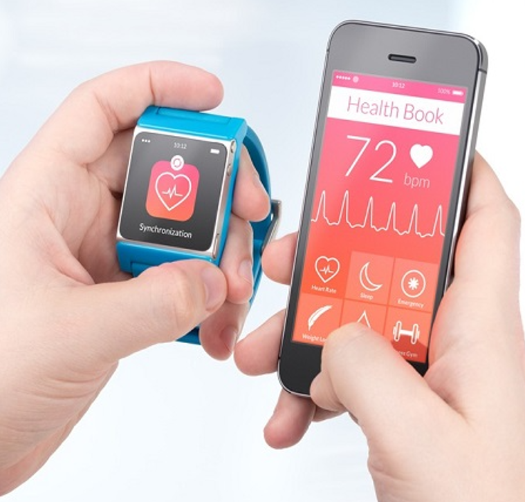
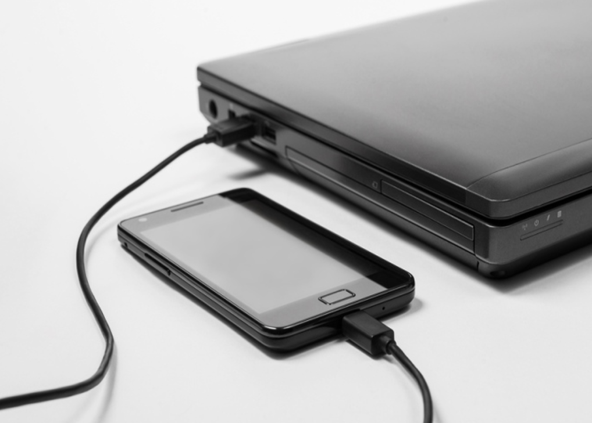
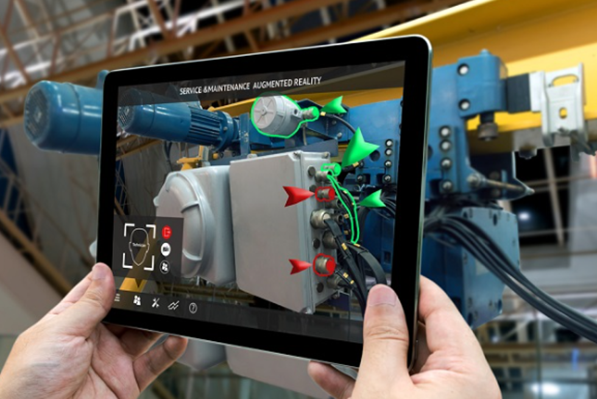

Mobilitás
Informatikában a mobilitás azt jelenti, hogy az otthonunktól vagy munkahelyünktől távol is hozzáférünk elektronikus információkhoz. Mobiltelefonos vagy egyéb adatkapcsolat szükséges hozzá. A mobileszközök saját, újratölthető áramforrással rendelkeznek, kicsik és könnyűek, valamint nem szükséges hozzájuk egyéb külső periféria (egér, billentyűzet). Mobileszközök a laptopok, tabletek, okostelefonok, okosórák és egyéb viselhető eszközök.
Laptopok
A laptopok hordozható számítógépek. Teljes képességű operációs rendszert futtatnak, ez lehet akár Microsoft Windows, iOS vagy Linux. Rendelkezhetnek ugyanakkora számítási kapacitással és memóriával, mint az asztali gépek. A laptopoknak saját képernyőjük, billentyűzetük és mutatóeszközük (például touchpad) van egybeépítve (ahogy az ábrán is látható). A laptopok működhetnek saját akkumulátorukról vagy elektromos hálózatról is. Általában többfajta kapcsolódási lehetőségük van: vezetékes vagy vezeték nélküli Ethernet és Bluetooth. Találhatunk rajtuk USB- és HDMI-portokat is. A legtöbbnek hangszórója és mikrofonja is van. Néhány laptop az asztali gépekhez hasonlóan különféle videokimenetet is tartalmaz. A hordozhatóság kedvéért feláldozott külső csatlakozókat kiegészítő hardveres megoldással (dokkoló vagy portreplikátor) pótolhatjuk. A hordozhatóság érdekében az asztali gépek számos előnyét is elveszíthetjük. A laptopokba nem biztos, hogy a leggyorsabb processzorokat építik be a hűtés nehézségei és a magas fogyasztás miatt. A memóriabővítésnek korlátai is vannak és a laptop memóriák egyes típusai drágábbak is. Az asztali gépek más bővítési lehetőségeitől is elesünk. Nagyobb háttértárak vagy speciális célú bővítőkártyák sem mindig szerelhetők be. Jellemző példa, hogy a laptopok grafikus kártyája szinte sosem cserélhető.
Az okostelefonok jellemzői
Az okostelefonok a laptopokkal ellentétben direkt mobileszközökre tervezett operációs rendszereket futtatnak. Kettő tipikus példa a Google Android és az Apple iOS operációs rendszerei. Az operációs rendszer frissítése korlátozott, ha elavul és nem frissíthető, kénytelenek leszünk új telefont venni, ha szeretnénk az új operációs rendszer tudását vagy csak az új operációs rendszeren futó alkalmazásokat igénybe venni. Az okostelefonok szoftvereit online boltokból (gyűjteményekből) telepíthetjük, mint a Google Play vagy az Apple App Store. Az okostelefonok nagyon kis méretűek és meglehetősen nagy teljesítményűek. Kicsi érintőképernyőjük van, fizikai billentyűzetük viszont nincs. A billentyűzet képét a képernyőre rajzolják ki. A kis méret miatt fizikai aljzatból általában csak egy-kettőt találhatunk rajtuk, mint az USB vagy fejhallgató-kimenet. Alapvetően a mobilhálózatot használják hang-, üzenet- és adatkapcsolatra is. Ezen kívül Bluetooth és Wi-Fi hálózatokat is használhatunk.
Okostelefonok funkciói
Az okostelefonok képesek helymeghatározásra is. A legtöbb beépített GPS-helymeghatározóval rendelkezik. A telefon GPS-vevője műholdak jeleiből határozza meg a helyét. Ezt az információt alkalmazások is használhatják: közösségi hálózatok vagy cégek is adhatnak helytől függő információt. Megfelelő alkalmazásokkal a telefon navigációs eszközzé is válhat, autóvezetés, kerékpározás vagy séta közben is használhatjuk. A GPS-vevővel nem rendelkező telefonok is képesek lehetnek a helyük meghatározására a mobilhálózat vagy közeli Wi-Fi hozzáférési pontok alapján, de ez kevésbé pontos. Az okostelefonok egy másik érdekes funkciója a mobilnet megosztása más eszközökkel, az ún. pányvázás (tethering). A többi eszköz USB, Bluetooth vagy Wi-Fi kapcsolaton keresztül férhet hozzá a mobilnethez. Nem minden szolgáltató engedi ezt a funkciót.
Tabletek és e-book olvasók
A tabletek vagy táblagépek hasonlítanak az okostelefonokra abban, hogy saját operációs rendszert használnak (Android vagy iOS). A legtöbb táblagép azonban a mobilhálózatra nem tud csatlakozni. Ez csak néhány felsőbb kategóriájú eszközben van jelen. A tabletek érintőképernyője nagyobb, mint az okostelefonoké. A képernyő képe élénkebb. Ugyanúgy használhatunk Wi-Fi-t vagy Bluetooth-t és a legtöbbnek USB- és audió-portjai is vannak. Sok tabletben ugyanúgy van GPS-vevő, amellyel helymeghatározást is igénybe vehetünk. A legtöbb telefonos alkalmazás táblagépre is telepíthető. Az e-könyv olvasók (legismertebb példája az Amazon Kindle) speciális célú eszközök fekete-fehér, szövegek megjelenítésére tervezett képernyővel. Messziről hasonlítanak a tabletekre, de rengeteg funkciót nem fogunk rajtuk megtalálni, amelyeket tableteken igen. A webes hozzáférés legtöbbször e-könyv boltokra korlátozódik, amelyet az olvasó gyártója üzemeltet. Sok olvasó érintőképernyővel rendelkezik, így könnyű a lapozás, a beállítások elvégzése vagy az internetes könyváruházak használata. Akár ezernél is több könyv tárolására is alkalmasak. Néhány modellhez ingyenes mobilnet jár, amellyel könyveket tölthetünk le a saját boltjából, de a legtöbb Wi-Fi-t használ. Ha van benne Bluetooth lehetőség, akkor fejhallgatóval hangoskönyvet is hallgathatunk. Az akkumulátoruk használati ideje a tableteknél nagyobb, 15-20 olvasással töltött óra, néha még több.
Viselhető eszközök: okosórák, fitnesz eszközök
A viselhető vagy hordható eszközök olyan okoseszközök, amelyeket a testünkre vagy ruhánkra rögzítve hordunk. Két tipikus példája az okosóra és a fitnesz karkötő. Okosórák Az okosóra olyan viselhető eszköz, amelynek saját processzora, speciális operációs rendszere van és alkalmazások telepíthetők rá. Az érzékelői információt gyűjthetnek a testünkről (pl.: pulzus) és Bluetooth kapcsolaton át továbbíthatják más eszközökre, például az okostelefonunkra. A telefon internetes alkalmazása elküldheti bárhova tárolás vagy elemzés céljára. Néhány okosóra önállóan is képes mobil adatkapcsolatra, megjelenítheti az alkalmazások értesítéseit, lehet benne GPS-helymeghatározó, illetve tárolhat és lejátszhat zeneszámokat. Fitnesz karkötők A fitnesz karkötők hasonlítanak az okosórákra, de a feladatuk csak a testünk elemzése: aktivitást, alvást és a mozgásunkat figyelik. Egy népszerű termék a FitBit, amely a pulzusunkat és a megtett lépéseinket rögzíti. Léteznek kifinomultabb egészségi állapotot figyelő eszközök is, amelyek a szívrohamot is észre tudják venni, mérik a levegő minőségét vagy a vér oxigénszintjét. Akár kórházi pontosságú adatokat is képesek biztosítani.
Viselhető eszközök: kiterjesztett és virtuális valóság
A kiterjesztett valóság (Augmented Reality, AR) azt jelenti, hogy a valódi világ kamera által felvett képét számítógépes grafikával egészítik ki (1. ábra). A grafikus feltétek, kiegészítések sokfélék lehetnek: egy játék rajzfilmszerű figuráitól kezdve egészen az elsősegélynyújtáshoz szükséges információk megjelenítéséig. A kiterjesztett valóságnak sok felhasználási területe lehet, ez a jövőbeli fejlesztéseknek egy ígéretes iránya. A kiterjesztett valósághoz hasonló fogalom a virtuális valóság (virtual reality, VR). A virtuális valóság esetén a felhasználó speciális sisakot vagy maszkot visel, amely egy számítógép által generált képet vetít elé (2. ábra). A kép tökéletes 3 dimenziós, valósághű világok megjelenítésére is képes. A felhasználó mozgását érzékelők követik, amelyek adatainak feldolgozásával interakcióba léphet vagy mozoghat a virtuális környezetben. A virtuális valóságot főleg játékoknál használják, de az oktatásban, képzésben is nagy szerepe lehet.
Új PC-t Akarsz összeszerelni?
- Alkatrészek amik majd kelleni fognak hozzá:
- Gépház
- Alaplap
- Videókártya
- Ram
- SSD/HDD
- Processzor
- Tápegység
- FIGYELEM
- Mindig legyen eleg magas wattos a tápegység hogy minden normálisan tudjon futni
| Gépház | |||
|---|---|---|---|
| Alaplap | Alaplap | Alaplap | Alaplap |
| Videókártya | Videókártya | Videókártya | Videókártya |
| Ram | Ram | Ram | Ram |
| SSD | SSD | SSD | SSD |
| HDD | HDD | HDD | HDD |
| Processzor | Processzor | Processzor | Processzor |
| Tápegység | Tápegység | Tápegység | Tápegység |
Órák

Telefonok

Üdvözlünk az oldalon!
Morbi placerat hendrerit ipsum sed tincidunt.
Rólunk
Morbi placerat hendrerit ipsum sed tincidunt.

VR eszközök

Mobil eszközök
Telefon eszközök
Okos órák